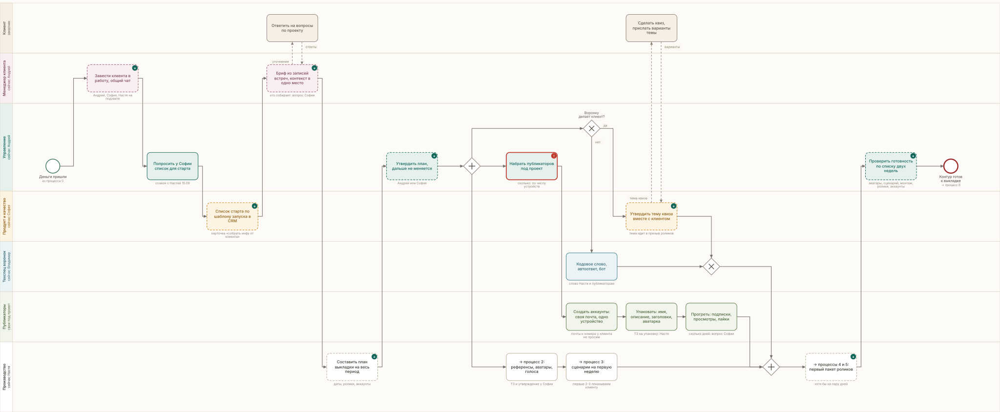
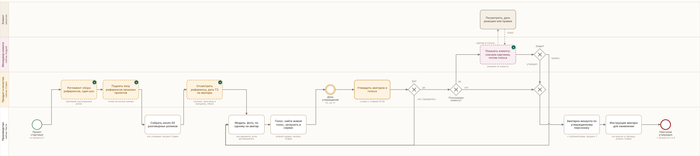
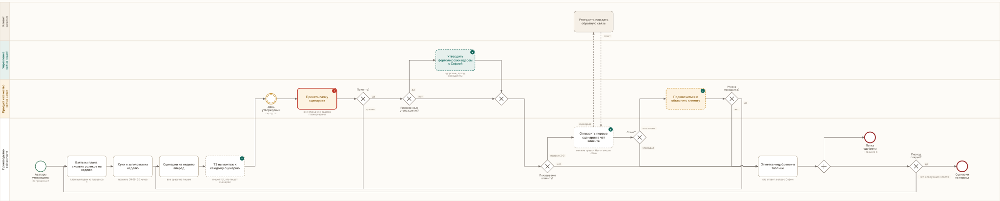
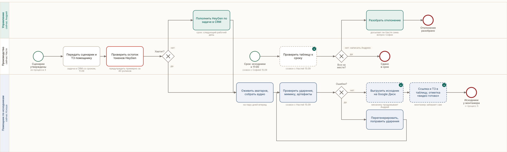
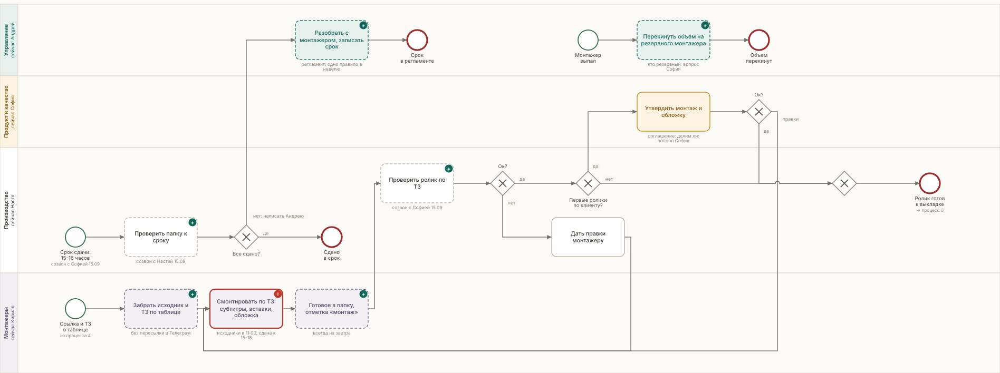
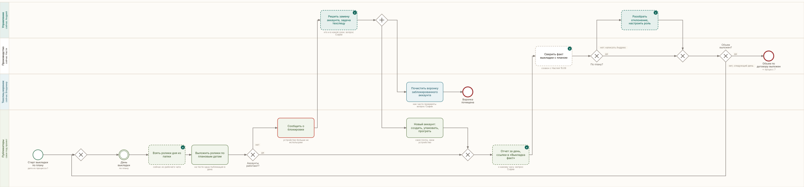

Рабочая страница Насти · проект стартовал 18.09.2026
Оплата пришла 18 сентября, проект в работе. Здесь по шагам: что делаем, в какие даты и что на выходе каждого шага. Ниже ритм рабочего дня, правила без исключений и схемы процессов.
Первое, что нужно от Насти. В плане:
Около 50 разговорных роликов, половина англоязычных, человек в кадре говорит. По темам клиента: алкогольная зависимость, депрессия и тревожные расстройства.
Идет параллельно с продуктом. Публикаторов набирает Андрей, аккаунты создают и прогревают они.
От Насти: ТЗ на упаковку 5 аккаунтов (имя, описание, заголовки, аватарка) и проверка, что упаковали по ТЗ.
Сверяем по списку в разделе Готовность. Если чего-то нет, отклонение идет Андрею, а не клиенту.
Ежедневный ритм ниже. Сценарии держим на неделю вперед, пачки Софии в пн, ср, пт. Публикаторы пишут ссылки в столбец «Выкладка факт», Настя сверяет факт с планом.
к 11:00 исходники и ТЗ у монтажа, ссылка в таблице. Пусто: Настя пишет Андрею.15-16 часов готовый ролик в папке с отметкой «монтаж». Нет ролика: Настя пишет Андрею.по плану публикаторы выкладывают ролики дня и пишут ссылки в столбец «Выкладка факт».вечер Настя сверяет факт с планом. Отклонение идет Андрею, он разбирает.пн, ср, пт пачки сценариев и монтажа на утверждение Софии.пятница запас роликов на выходные: нужно два в день, делаем три.Только пн, ср, пт, по возможности один раз в день. Просьба в другой день это сбитое планирование у того, кто просит.
Сроки, простои, блокировки, сорванный монтаж. Клиенту об этом не пишем.
Своя почта на аккаунт. Заблокированное устройство больше не используем.
Никогда, даже слабые по просмотрам.
Одна таблица на всех клиентов, клиенты по листам. Наружу идут только сценарии, ролики и отчеты.
Первые 2-3 сценария и мелкие правки. Остальное ведет Андрей.
Производство в выходные не работает, публикация идет. Запас готовим заранее.
Фото, голоса, почты и номера для аккаунтов у него не просим.





